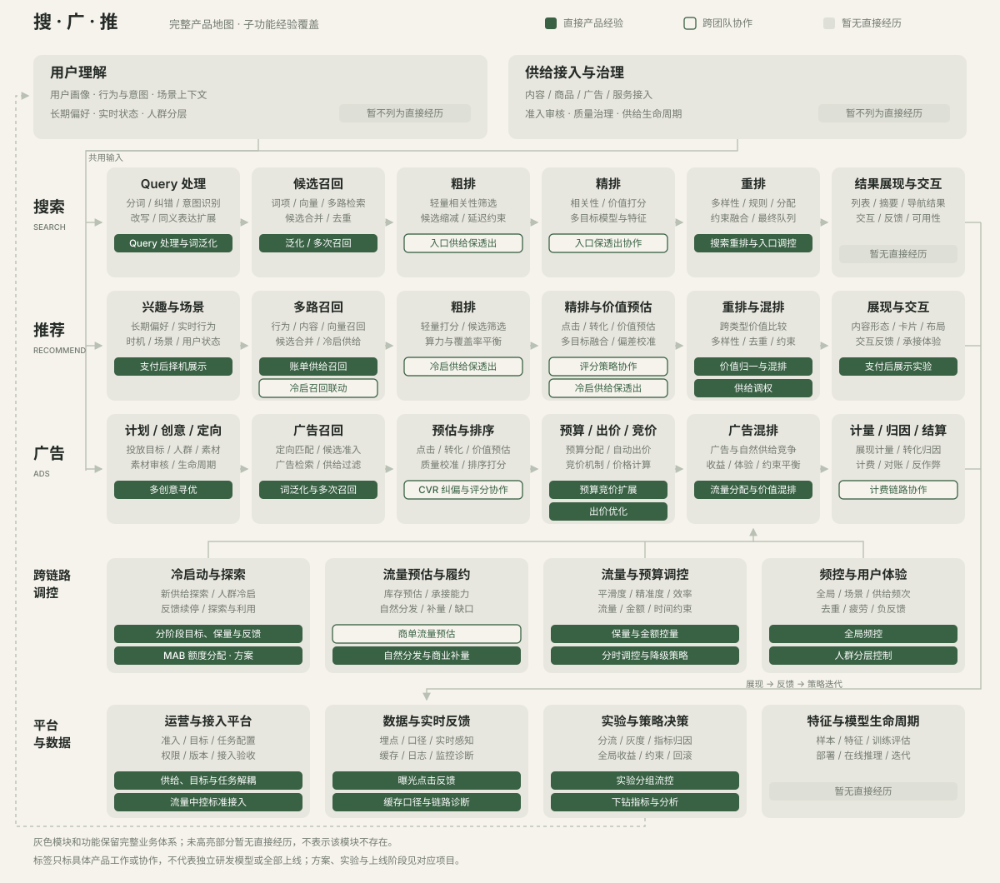
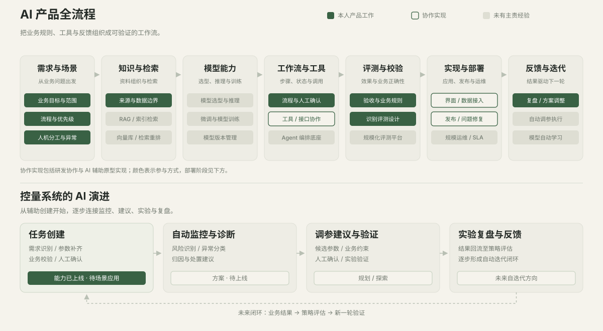

2023.12 — 至今CURRENT
支付宝 高级产品经理
支付宝（杭州）信息技术有限公司
从支付后推荐到跨场景流量调控，负责混排机制、保量控量与平台产品，推进预算金额控制与 AI 工作流。
YUNFEI BAN / PRODUCT MANAGER
7 年产品经验 · 支付宝 / 快手 / 百度 · 深圳大学本科
SEARCH · ADS · RECOMMENDATION

PROJECTS / 项目经历
支付宝经历按三条主线展开。
具体项目保留职责与交付阶段。
PERSONAL PRACTICE / 个人应用
EXPERIENCE / 职业经历
2019 — 至今
产品、策略与平台实践
支付宝（杭州）信息技术有限公司
从支付后推荐到跨场景流量调控，负责混排机制、保量控量与平台产品，推进预算金额控制与 AI 工作流。
北京快手广告有限公司
北京百度网讯有限公司
华夏幸福（深圳）运营管理有限公司
工程管理 · 本科 · 工学学士
2015.09 — 2019.06AI APPLICATION / 延伸实践
AI 的完整产品链路还包括知识、模型、评测、部署与运营。下图标出我的产品与协作经历，并区分任务创建、监控诊断、辅助调参与自我迭代各自的阶段。

ABOUT ME
比起给自己贴性格标签，我更愿意用几件小事介绍自己。
班云飞做价格雷达时，页面已经能展示商品，我还是要求换成官网真实价格，再查来源和更新时间。看到真实数据跑通，我才确认这一步完成。
我喜欢和 AI 试做新东西。短剧第一版的画面不错，但故事没讲好，我就继续追着改剧情。做出一个版本，才有具体的东西可以判断。
我有时还没听清对方的问题，就开始讲自己的判断。现在提醒自己先确认理解，再回应。分歧中的倾听和表达节奏，是我需要继续改进的地方。
LET’S TALK / 开始一段对话
主要关注搜索、流量策略、商业化与平台产品，也欢迎交流 AI 应用。